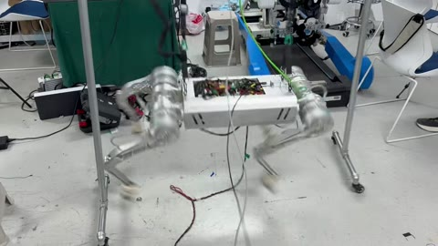

Observe
PACE-based collection retained commanded and measured joint trajectories instead of relying only on body-level behavior.
Core project 02 · EtherCAT torque control
I worked on the software and control path from a PPO locomotion policy to 12 EtherCAT drives in CiA-402 Profile Torque mode, with joint-level recordings used to investigate deployment mismatch.

Control architecture
The learned policy supplies joint targets; lower layers recompute torque from current feedback and refresh the EtherCAT PDO path at a faster rate.
My Role
The archived project contains several model/configuration versions. This page shows the hardware path and records, not an unverified aggregate performance metric.
Diagnostic loop
I used desired and measured joint motion to inspect tracking shape, offsets, and axis-specific behavior before revising model/interface assumptions and returning to hardware tests.
PACE-based collection retained commanded and measured joint trajectories instead of relying only on body-level behavior.
Checks covered coordinate mappings, default pose and action scale, static friction, actuator response, and PD behavior.
Model/interface changes and dynamics compensation were assessed through the same measured control path.
Hardware record
The images show the physical platform and bench context. The curve is a retained command-versus-measurement diagnostic, not a summarized tracking score.

What I learned
This work strengthened my interest in controllers that can distinguish model, actuation, sensing, and timing effects rather than absorb all of them as a single unexplained deployment error.